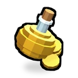
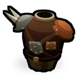

Riveted Plate
Riveted Plate is a rare material. A plate punched for rivets. Raiders wear them, and the Smelter can make them.
Item sources
| Source | Quantity | Rarity | Notes |
|---|---|---|---|
| Scrap Warlord | 1–3 | 18.35% | |
| Raider | 1 | 1/59 | |
| Sand Storm chests | 1–2 | 30% of its extra row | Endless Dungeon |
Made by
Level 60, at the Smelter; makes 1:
 Scrap ×10
Scrap ×10 Adamantite Ingot ×1
Adamantite Ingot ×1 Coal ×10
Coal ×10
Uses
| Makes | Takes | Level | Notes |
|---|---|---|---|
 Gilded Draught ×2 | 3 | 40 | Cookhouse |
 Storm Chart ×2 Storm Chart ×2 | 2 | 25 | Cartographer's Table |
 Riveted Adamantite Armor Riveted Adamantite Armor | 3 | 40 | |
 Riveted Adamantite Buckler Riveted Adamantite Buckler | 1 | 40 |
Repair Station
The Repair Station mends these with it:
- Riveted Adamantite Armor
- Riveted Adamantite Buckler

Marauder's Harness Warlord's Horned Helm
Warlord's Horned Helm
Notes
Not written yet
When Riveted Plate is worth getting, and what to do with it.
Gallery
Not written yet
No pictures yet: renders, models and animations go here.
Trivia
Not written yet
Anything else worth knowing.
Changes
Not written yet
What changed for Riveted Plate, update by update.